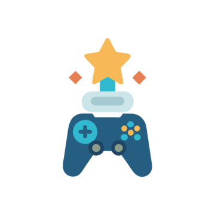

Lista requisitos Platino
- Completar la historia principal
- Conseguir todos los coleccionables
- Superar las misiones secundarias: conseguir una puntuación determinada, una marca de tiempo, etc.

Platino propio de la plataforma XBOX. Se otorga al completar los logros originales del juego base. No se tienen en cuenta expansiones ni DLC lanzados posteriormente.
Con la nueva actualización, Steam agrupara los logros de un videojuego en colecciones independientes.
Cada una tendrá su propia barra de progreso y, al completarla, añadirá una insignia al perfil del juego.
Los logros del juego base aparecerán en azul y los asociados a DLC, en morado.